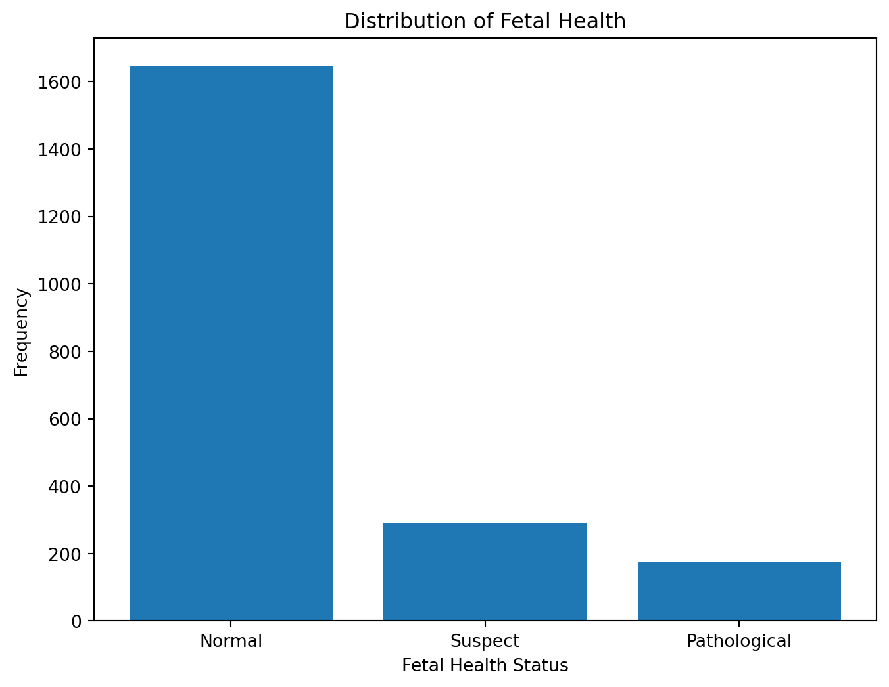
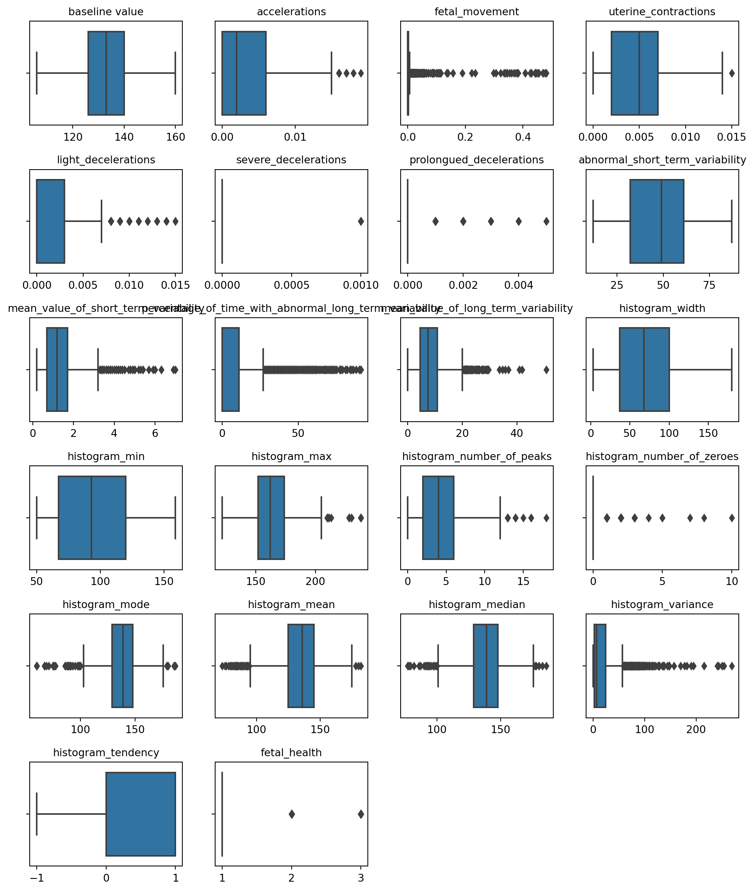

Classifying Fetal Health Conditions Using Machine Learning Algorithms and Cardiotocography (CTG) Data
code
analysis
Author
Xiaoying Yang
Published
November 26, 2023
Cardiotocograms (CTGs) and fetal health
The reduction of child mortality, a central objective in several of the United Nations’ Sustainable Development Goals, stands as a crucial measure of human progress. In this context, Cardiotocograms (CTGs) emerge as an effective and economically viable method to monitor fetal health. They equip healthcare professionals with vital data, enabling timely interventions to prevent both child and maternal mortality. Functioning through the emission and reception of ultrasound pulses, CTGs provide critical insights into fetal heart rate (FHR), fetal movements, uterine contractions, and other significant parameters, thereby playing a pivotal role in prenatal care.
In clinical environments, specialized procedures exist to evaluate whether a patient’s Cardiotocogram (CTG) is normal, a process that necessitates expert domain knowledge. As machine learning technology advances, there is growing potential to develop sophisticated models that can classify fetal health more efficiently. These models would be based on features extracted from CTG outputs, aiming to enhance the prediction of child and maternal mortality. This integration of machine learning into fetal health assessment represents a significant stride towards more accurate and accessible prenatal care.
Dataset and Model description
In this blog, we explore the use of a Kaggle dataset to classify fetal health conditions using machine learning models. This dataset comprises 2126 instances of features derived from Cardiotocogram (CTG) exams. These features have been categorized into three classes by expert obstetricians: Normal, Suspect, and Pathological. Our objective is to develop a multiclass model capable of accurately classifying CTG features into these three distinct fetal health states, demonstrating the potential of machine learning in enhancing prenatal care diagnostics.
Here are steps of implementing the machine learning models to do the classification:
Load & Pre-process data: Handling missing values, outliers, etc.
Label encoding: Split data into training dataset and test dataset, and transform data by scaling and normalization, which makes continuous variables into a common scale to ease the comparison between variables with various units and ranges.
Modeling
Evaluation
Step 1: Load & Pre-process data
The histogram below provides a visual overview of how the fetal health cases are distributed across these three categories, indicating the relative frequencies of normal, suspect, and pathological fetal health conditions in the dataset.
# import libraryimport numpy as np import pandas as pdfrom scipy import statsfrom sklearn import preprocessingimport matplotlib.pyplot as pltimport seaborn as snsfrom sklearn.impute import KNNImputerfrom sklearn.preprocessing import MinMaxScalerfrom sklearn.naive_bayes import MultinomialNBfrom sklearn.linear_model import LogisticRegressionfrom sklearn.tree import DecisionTreeClassifierfrom sklearn.ensemble import RandomForestClassifierfrom sklearn.neighbors import KNeighborsClassifierfrom sklearn.svm import SVCfrom sklearn.ensemble import GradientBoostingClassifierfrom sklearn.model_selection import train_test_splitfrom sklearn.metrics import confusion_matrix, accuracy_score, precision_score, recall_score, f1_score# load & preprocess datadf = pd.read_csv('https://raw.githubusercontent.com/xiaoyingyang96/xiaoyingyang96.github.io/main/Data/fetal_health.csv')#handle missing values, drop duplicated rowdf.isnull().sum()df = df.drop_duplicates()# Plotting the histogram for the distribution of fetal_healthplt.figure(figsize=(8, 6))plt.hist(df['fetal_health'], bins=np.arange(1, 5) -0.5, rwidth=0.8)plt.xticks(ticks=[1, 2, 3], labels=['Normal', 'Suspect', 'Pathological'])plt.xlabel('Fetal Health Status')plt.ylabel('Frequency')plt.title('Distribution of Fetal Health')plt.show()

# Handling outlier for numeric attributes # Create a 2x3 grid of subplotsfig, axes = plt.subplots(6, 4, figsize=(10, 12))axes = axes.flatten()# Create a boxplot for each continuous variablefor i, column inenumerate(df.columns): sns.boxplot(data=df, x=column, ax=axes[i]) axes[i].set_title(f"{column}", fontsize=10) axes[i].set_xlabel("") # Remove x-axis title# Remove empty subplotfor i inrange(len(df.columns), len(axes)): fig.delaxes(axes[i])# Adjust layoutplt.tight_layout()plt.show()

Boxplots are useful for indicating whether a distribution is skewed and whether there are potential unusual observations (outliers) in the dataset. In this example we applied boxplots to explore outliers from each data and diagrams for each attribute are presented above. The boxplots reveal outliers in several attributes. Nonetheless, considering that the dataset has been reviewed and interpreted by clinic experts, the apparent outliers identified in the boxplots might not be anomalous in a clinical setting. Rather, they may signify clinically relevant variations, such as indicators of fetal distress or maternal health conditions. No action will be taken on these values that out of boxplot range.
Step 2: Label encoding
The dataset was split into 2 parts. 30% of the data will be reserved for testing, and 70% will be used for training. Then the “fit-transform” method is called on the scaler object to scale the training data. This method computes the minimum and maximum values to be used for later scaling(fit), and then scales the training data(transform).
#Label encoding#Dara Splittingdf_features = df.drop(['fetal_health'], axis=1)df_target = df['fetal_health']# split df at 70-30 ratioX_train, X_test, y_train, y_test = train_test_split(df_features, df_target, test_size=0.3, random_state=123)# Initialize the MinMaxScaler objectscaler = MinMaxScaler()# Fit the scaler on the training data and transform the training datascaled_X_train = scaler.fit_transform(X_train)# Transform the test data using the fitted scalerscaled_X_test = scaler.transform(X_test) # Only transform, no fitting#Convert the scaled training data back to a DataFramescaled_X_train = pd.DataFrame(scaled_X_train, columns = X_train.columns, index=X_train.index)scaled_X_train.head()
In machine learning, we CANNOT “fit” the scaler to the test data because doing so would make the model indirectly aware of the specifics of the test data. If we fit on the test data, the scaler will adjust its parameters according to the range of the test data, which is equivalent to leaking information about the test data during the training phase of the model. This can lead to overfitting the model to the test data, which affects our purpose of realistically evaluating the generalization ability of the model.
The correct approach is to only fit on the training data and use this fitted scaler to transform the test data. This ensures that our model evaluation is fair because the test data is scaled to the range of the training data, not its own range. In short, this ensures that the data in the test phase is not previously seen by the model, thus providing a fair assessment of the model’s performance when dealing with new data. The test data fitted by scaler from training data is shown as below.
In this study, Machine Learning algorithms including Naive Bayes, Logistic Regression, Decision Tree, Random Forest, K-Nearest Neighbors (KNN), and Support Vector Machines (SVM) are applied to train models.
Model 1: Naive Bayes
# Naive Bayesnaive_bayes = MultinomialNB()# Train the NB model on the train datanaive_bayes.fit(scaled_X_train, y_train)# Predict on test datay_pred_nb = naive_bayes.predict(scaled_X_test)# Calculate evaluation metricsaccuracy_nb = accuracy_score(y_test, y_pred_nb)precision_nb = precision_score(y_test, y_pred_nb, average='weighted')recall_nb = recall_score(y_test, y_pred_nb, average='weighted')f1_nb = f1_score(y_test, y_pred_nb, average='weighted')# Print resultsprint("Accuracy:", round(accuracy_nb, 3))print("Precision:", round(precision_nb, 3))print("Recall:", round(recall_nb, 3))print("F1-Score:", round(f1_nb, 3))
The performance of each machine learning model, trained using various algorithms, is evaluated using metrics such as accuracy, precision, recall, and F1-Score. These metrics provide a comprehensive understanding of different facets of model performance, enabling the selection of the most effective model. Metrics have shown in belowing table. As a result, the model trained by random forest algorithm has the best performance among 6 models.